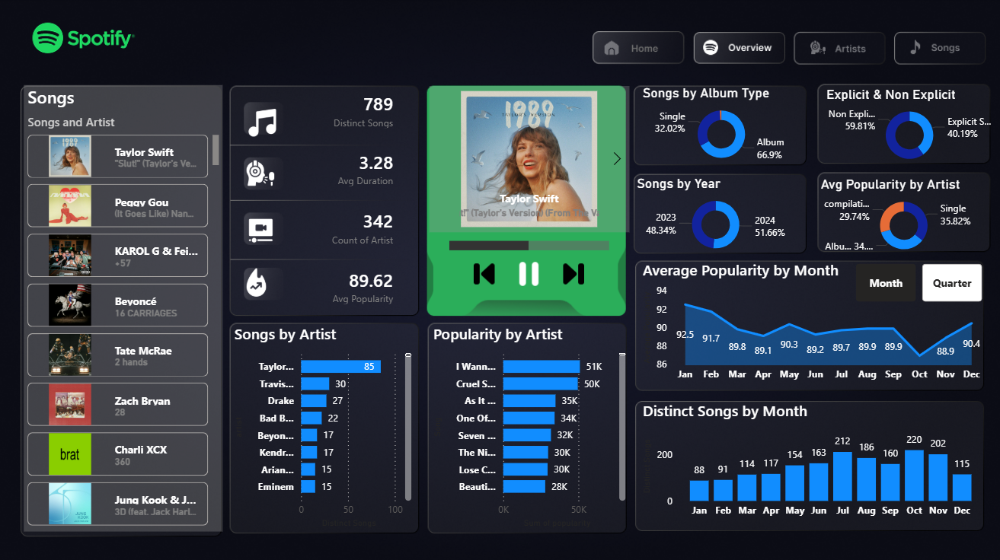
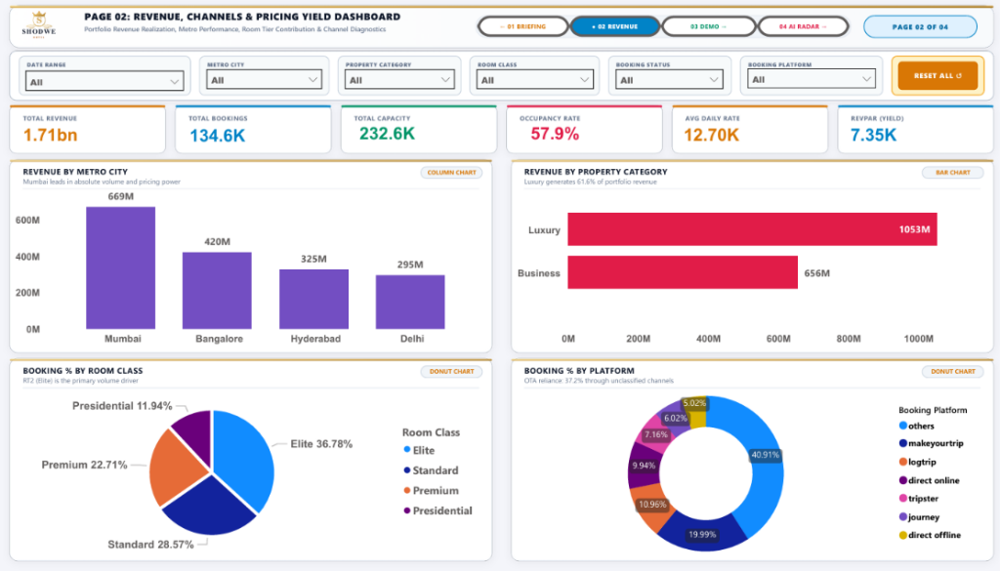
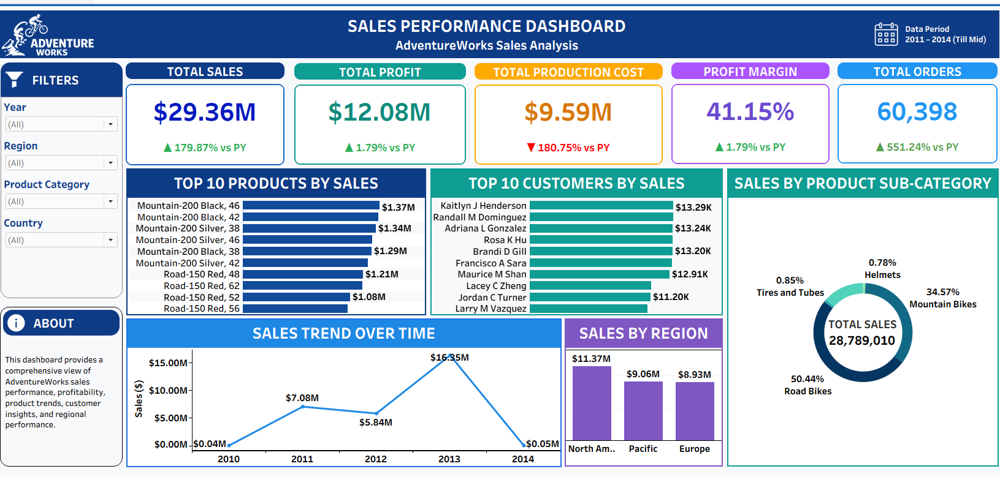
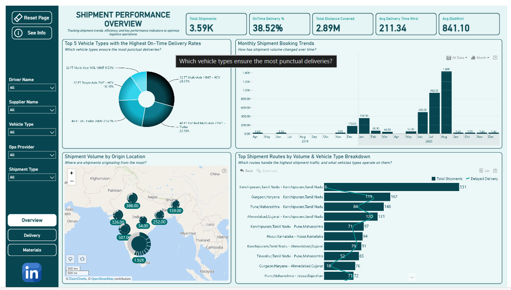
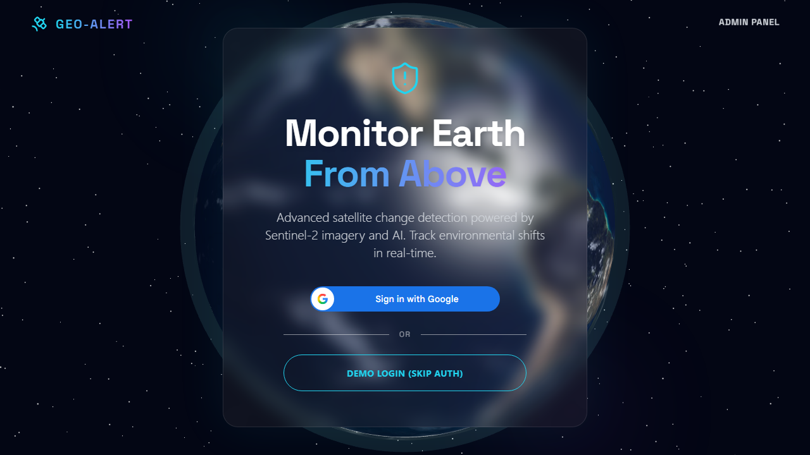

Interactive Spotify Top 50 Analytics Dashboard
Dark-theme multi-page Power BI application inspired by Spotify’s native player, turning 27,800 global streaming records into interactive Overview, Artists, and Track-level scorecards.
Turning complex operational and transactional data into actionable insights, Star-Schema Power BI dashboards, and decision-grade SQL pipelines. NASSCOM Gold Certified (83%) with 15 months at Jowali Foods & 6 months at AI Variant.

Combining real-world manufacturing data ops with modern SQL, Power BI, and Python analytical engineering.
Great analytics starts long before a dashboard is published—it starts with auditing messy operational spreadsheets, catching inventory discrepancies early, and structuring clean relational models that leadership can actually trust.
With 15 months of manufacturing data operations experience at Jowali Foods Pvt. Ltd. and a 6-month Data Analyst internship at AI Variant, I connect daily operational reality with SQL, Power BI (DAX), Tableau, and Python pipelines.
Multi-page Power BI & Tableau executive suites on clean Star Schemas with AI Decomposition Trees.
MySQL CTEs, window functions (DENSE_RANK, LAG), executive views, stored procedures, and validation.
Automated Pandas/NumPy cleansing scripts, outlier isolation, and reproducible Jupyter notebooks.
Production costing, planned vs. actual variance models, and weekly stock reconciliation.

Dark-theme multi-page Power BI application inspired by Spotify’s native player, turning 27,800 global streaming records into interactive Overview, Artists, and Track-level scorecards.

Executive Power BI & Tableau suite analyzing 134,590 bookings across 25 luxury properties to uncover RevPAR gaps, channel drag, and 24.83% cancellation erosion.

End-to-end 467-line MySQL analytical engineering script (CTEs, UNION ALL, DENSE_RANK, 4 executive views) synced with matching KPI dashboards in Power BI, Tableau, and Excel.

Multi-fact Star Schema connecting sales, shipments, production, procurement, and inventory across 9 tables to evaluate supplier scorecards, OTIF delivery, and carrier routes.

Team B.E. capstone platform monitoring deforestation and urban land-use shifts via Sentinel-2 NDVI imagery. Owned technical documentation, alert workflow design, presentation, and copyright filing.
Verified corporate operations experience, 6-month analytics internship, Microsoft technical tracks, and campus R&D leadership.
Every skill listed below is backed by shipped dashboards, production spreadsheets, SQL scripts, or verified third-party credentials.
Third-party assessed analytics credentials with verifiable certificate IDs and academic distinction.
Suman Ramesh Tulsiani Technical Campus (SRTTC), Savitribai Phule Pune University (SPPU), Pune
Key Coursework: Business Intelligence (A+), Software Testing & QA (A+), Deep Learning (A), DBMS, Machine Learning
Immediate joiner open to full-time Data Analyst, BI Analyst, Power BI Developer, and Operations / MIS roles.
Actively interviewing across Pune, Bengaluru, Mumbai, and Remote teams. Reach out directly via email, LinkedIn, or phone—I typically respond within a few hours.